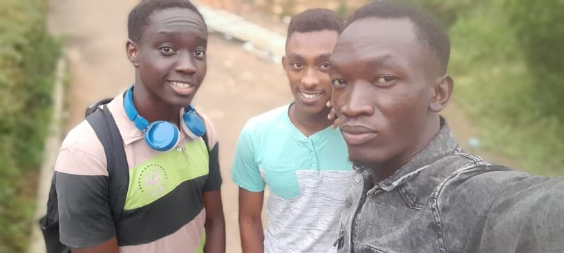
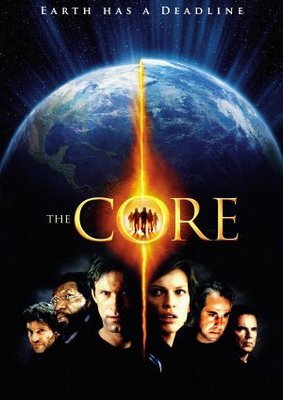
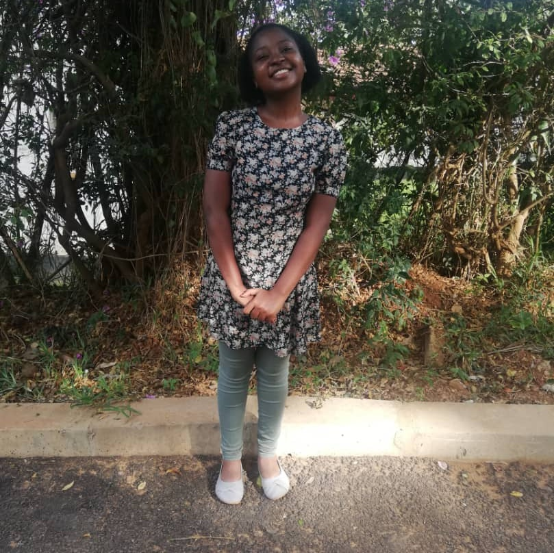

My friends. That's Daniel, Josh , and Brian. We call ourselves the 404. We're actually five just that Sean and I were missing in the group picture.

Favorite movie so far. It's very interesting, a lot of science, a little bit of love and a lot more of inspiration. My favorite actor is DJ Quals, the hacker.

Dream university. I actually just found out about MIT recently and I'm madly in love with it. It takes only geniuses, nothing less.

I'm actually 5'1, but that's the whole me, just me.